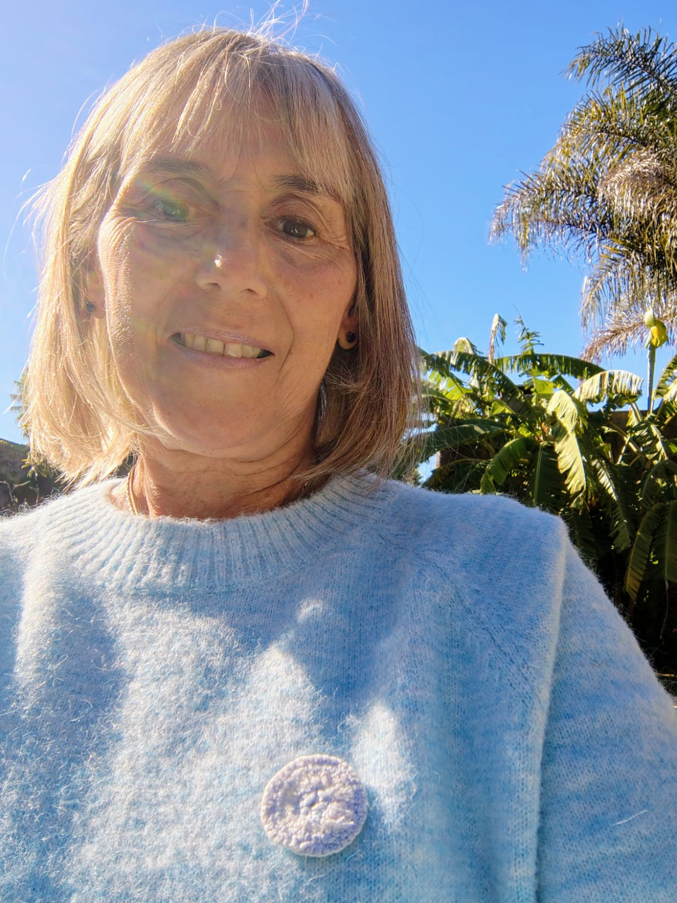

Un espacio dedicado a tu bienestar integral y crecimiento personal.
Agenda tu SesiónEl coaching ontológico es un proceso de acompañamiento profundo que te invita a explorar y transformar tu forma de ser en el mundo. No solo buscamos alcanzar metas, sino cuestionar los juicios y creencias limitantes que nos detienen.
A través de conversaciones poderosas, Sonia te ayudará a observar tu realidad desde una nueva perspectiva, expandiendo tus posibilidades y permitiéndote diseñar la vida que deseas.
Son 32 puntos específicos en la cabeza que, al ser tocados suavemente, liberan la carga electromagnética de pensamientos, ideas, actitudes y creencias que hemos acumulado a lo largo de nuestra vida. Es como "resetear" el disco duro de tu mente.
Una sesión de Barras Access puede reducir el estrés, la ansiedad, mejorar la claridad mental y abrirte a recibir más facilidad, gozo y gloria en todas las áreas de tu vida.

Hola, soy Sonia. Mi propósito es acompañarte en tu camino de autodescubrimiento y sanación.
Me he formado como Coach Ontológica en Axon y soy especialista en Energías del Cielo en Reiki. Estas dos poderosas herramientas, junto con mi experiencia, me permiten ofrecerte un enfoque integral que aborda tanto tu mente como tu cuerpo y energía.
En este espacio, encontrarás un refugio de paz y la guía necesaria para reconectar con tu esencia y potencial ilimitado.